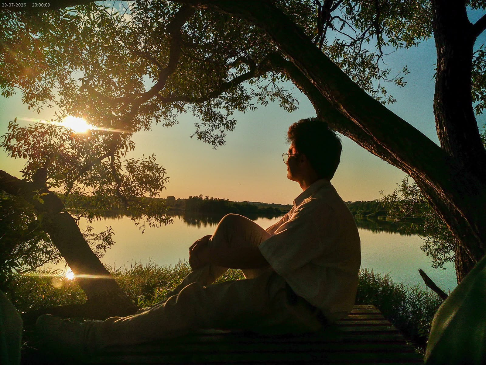
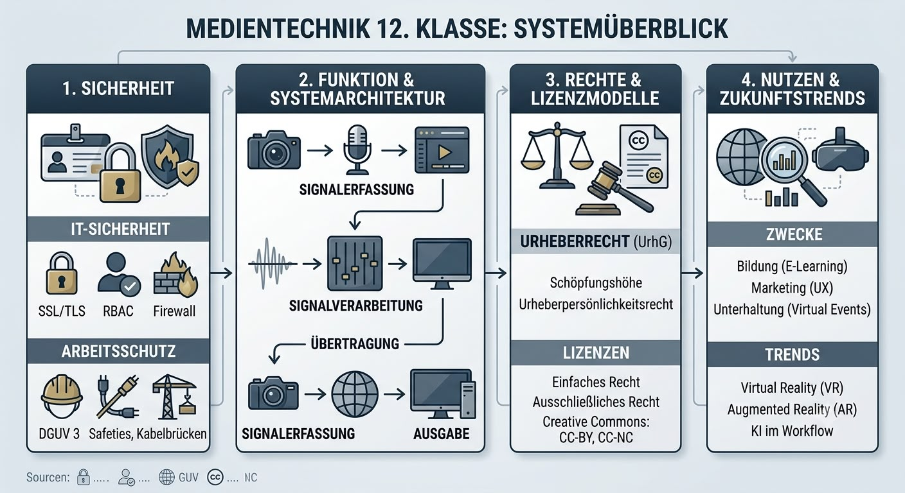

Über mich
Hallo! Ich bin Leon Wyppych aus Kiel. Auf dieser Website präsentiere ich meine Arbeiten aus den Bereichen Fotografie, Design und Medientechnik sowie Einblicke in meine schulischen Projekte und Praktika.

Meine Schwerpunkte
- Fotografie: Produktfotografie und Bildbearbeitung mit Lightroom & Photoshop
- Medientechnik: Systemarchitektur, Signalfluss, Farbmodelle und IT-Sicherheit
- Praxis & Schule: Kompendium Medientechnik (Klasse 12) und Praktikumserfahrungen
Medientechnik 12. Klasse – Vorschau
Ein Einblick in mein Kompendium zur Medientechnik:
